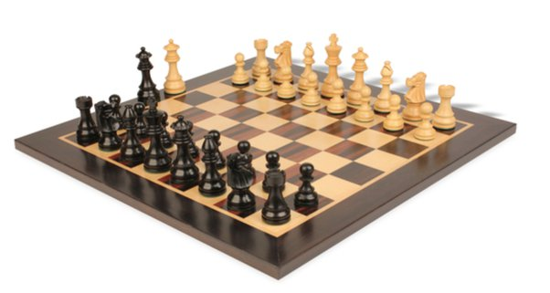
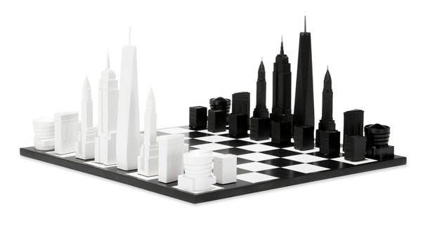

In simple terms, what is an isomorphism in mathematics? For example, what does it mean that there is an isomorphism between the real and complex numbers?
Here’s a chess set[1].

Here’s another chess set[2].

They look rather different, but they are both chess sets. When people play chess with these sets, or any other, they are playing the same game. Chess is chess is chess. We say that these two chess sets are isomorphic even though they look and feel and cost differently. I can match up their pieces, one-to-one, and any game played on one can be faithfully reproduced in the other. It’ll be the same game, with the same opening, the same mistakes, the same sacrifices and the same winner.
All chess sets in the world are isomorphic. Even the online ones. Even the ones in the magazine. Even the one you keep in your mind as you play a blind game. The black king in any set can be matched with the black king in any other set, and they obey the same rules and make the same moves. Any game can be played on any set.
From an artistic perspective, the two sets pictured above aren’t at all isomorphic. Nor are they isomorphic from a physical perspective: they have different weights, different dimensions, different materials. The molecules that make up the black king in one set cannot be matched with the molecules that make up the second. But for the study of the game of chess, for playing chess, for thinking about chess, the molecules are meaningless. They don’t need to even exist. Chess emerges from the rules of the game, and as long as a king moves and captures the way a chess king moves and captures, it’s a chess king.
The notion of isomorphism in mathematics is similar, but there are many subtleties which may only become apparent over time.
Many mathematical structures consist of “elements” (numbers, points, functions, what have you) and various connections or relations or operations between them. Things can be added, or multiplied, or compared, or have a distance between them.
The essence of the structure, like the essence of chess, emerges from those connections, or relations, or rules. The physical form or abstract nature of the elements are immaterial. If you have two structures of the same kind (two fields, two groups, two topological spaces) and their elements can be matched up in a way that preserves the rules, we say that they are isomorphic (“iso-morphic” comes from “equal shape” or “equal form”.)
Take the natural numbers with the usual rules of addition, multiplication and order.
Familiar structure? Good.
Now color all the numbers pink. Seriously. Imagine an “alternative” set of natural numbers which are all pink. Make them obey the same rules: pink 1 plus pink 6 is pink 7, pink 7 times pink 11 is pink 77, and so on. Exact same rules.
We’ve been studying the natural numbers for millennia. They are infinitely wondrous. But if someone asks you to fund their research into this new and exciting algebraic structure, the pink natural numbers, you’d be right to refuse. It doesn’t matter. Pink primes are just like primes, pink arithmetic progressions are arithmetic progressions, and so on. There’s no point in studying pink arithmetic, because the natural numbers and the pink natural numbers are isomorphic. Any mathematical assertion about one is automatically true of the other.
Note that I said mathematical assertion. Some assertions are only true for pink numbers, for example: they are pink. But anything that can be expressed with addition, multiplication and order is the same. The Prime Number Theorem holds for pink numbers. If someone solves the pink Twin Primes problem, they will have solved the classical Twin Primes problem as well. Isomorphic.
This is what you initially learn when you get introduced to isomorphisms. Since isomorphisms match up the elements of one structure with those of the other, they are merely a renaming, a recoloring, a silly replacement of the elements with an alternative set which behaves in the exact same way. When you imagine the class of structures that are isomorphic to, say, the rational numbers, you think of “rational numbers with a different color” or “rational numbers expressed in French” or some such silly rechristening.
Sometimes the relabeling seems a little less obvious. Consider:
- The numbers 0 and 1, with addition “mod 2", which simply means 0+0=0, 0+1=1, 1+0=1, 1+1=0.
- The logical constants “T” and “F” (True and False), with the operation of “XOR” (Exclusive Or)
- The real numbers -1 and 1, with the operation of multiplication.
All of these structures are isomorphic. They are all groups (a set with a single operation), and it’s easy to map their elements to each other so that the operation stays the same: 0 is like “True” is like 1, and 1 is like “False” is like -1. Yes, the 1 in example 1 is not the 1 in example 3, it’s the -1. Do you see why?
So yes, sometimes isomorphisms can look a bit less silly than pink numbers. But still pretty obvious and transparent.
But then…
Then one day you’re the teaching assistant in a course on the Theory of Groups, taught by Zlil[3]. You’re already a grad student, and you’re young, so clearly you know everything, and definitely everything about isomorphisms, which are just silly recoloring of the elements of a structure.
And in the very first problem set Zlil proposes for the students, he asks them to consider two structures (which are both groups):
- The positive rational numbers, with the operation of multiplication;
- Infinite sequences of integers which are all 0 except for finitely many, with the operation of addition term-by-term.
They are to show that these two groups are isomorphic.
Wait, what? How could rational numbers, simple finite things, be isomorphic to infinite sequences? Almost all 0? With addition rather than multiplication? Huh?
Once you think about it some, you manage to see how these two groups are isomorphic. (Do it! Ask for hints if you’re stuck, but please check other comments because someone may have asked before you.) Formally, you got it, but your perspective on isomorphisms is a bit shaken.
Of course, you then remember that you used to think that it’s impossible for short interval to be in bijection with a long interval, or a square, but you know that’s true, so these sets are isomorphic as mere sets, which is what everyone learns in a first course in set theory. But the group-theory example is still kind of different.
(The isomorphism between real and complex numbers alluded to in the question is also, presumably, the set-theoretic correspondence between these sets in their naked form, with no algebra and no topology. Very few people would call these things “isomorphic” without explicitly clarifying that they’re talking about sets).
What would the analogy be in the world of chess?
The isomorphism between any two chess sets you’ve ever seen is obvious. It’s not surprising. But imagine someone invents a new game, say a game played with piles of matches, with various complicated rules about how matches are allowed to be transferred from one pile to the other. It’s a wild and crazy game whose rules are impossible to memorize.
And then, someone proves that your game-with-matches is isomorphic to chess! Yeah! This combination of piles of matches is a pawn, and these are the white queen, and they show you that the allowed match moves correspond exactly to the rules of chess, with castling and en-passant and all.
The matches game is chess, though it doesn’t look anything like chess at first glance. Just like infinite sequences of integers don’t look anything like rational numbers. And yet, they are isomorphic.
Even though isomorphisms are defined very simply and very naturally as structure-preserving bijections, they can emerge in very unexpected situations.
Some things are isomorphic in a very obvious way, like complex numbers and pairs of real numbers with an appropriate multiplication.
Some are less obvious, like complex numbers and appropriate matrices.
And some are downright shocking, like Fourier series: the Hilbert space of square-integrable functions on the circle (up to almost-everywhere equality) and the space of square-summable infinite sequences of complex numbers are isomorphic. The “continuous” space L^2(\mathbb{T}) is isomorphic to the “discrete” \ell^2(\Z).
Any student of mathematics should, and eventually does, get used to the many faces of isomorphisms, unique isomorphisms, natural isomorphisms and other variants. It’s fundamentally important, and well worth your time thinking about.
Footnotes
[1] French Lardy Staunton Chess Set in Ebonized Boxwood with Macassar Chess Board - 3.25" King